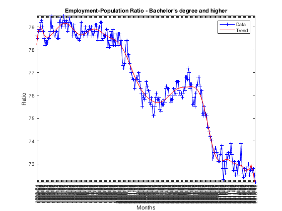
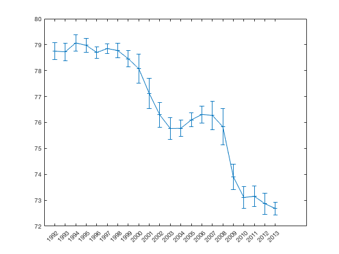
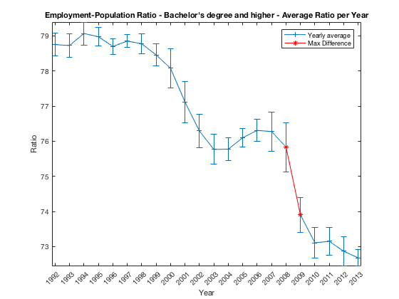
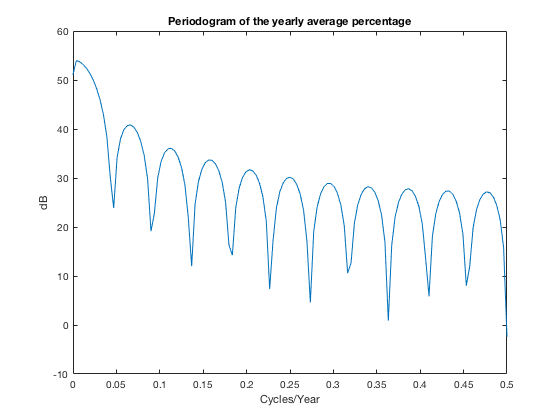

Contents
dataset downloaded from: https://datamarket.com/data/set/1rt1/employment-population-ratio-bachelors-degree-and-higher
close all;
clear;
clc
import data
Employment = importdata('AnnualEmployment.dat');
convert data from string to cells
contents = {};
for i = 1:size(Employment,1)
employ = strrep(Employment{i,1},'"','');
contents{i} = strsplit(employ,'\t');
end
convert data from string to cells and extract Year Month And Percentage (i.e. Ratio)
projTitle = contents{1,end};
YearMonthContents = [];
YearMonthL={};
for i = 2 : size(contents,2)-1
localData = contents{1,i};
YearMonth=strsplit(localData{1,1},'-');
YearMonthL=[YearMonthL; localData{1,1}];
Year=str2num(YearMonth{1,1});
Month=str2num(YearMonth{1,2});
NotAdjusted = localData{1,3};
NotAdjusted = str2num(strrep(NotAdjusted,'%',''));
YearMonthContents = [YearMonthContents; Year Month NotAdjusted];
end
Save principal variable
save('YearMonthContents.mat','YearMonthContents');
Computer mean and stdev year by year
uniqueYears = unique(YearMonthContents(:,1));
sumPerYear = [];
counter = 1;
for i = 1:size(uniqueYears,1)
year=uniqueYears(i,1);
[x,y] = find(YearMonthContents(:,1)==year);
sumPerYear =[sumPerYear; mean(YearMonthContents(x,3)) std(YearMonthContents(x,3))];
end
Find the best trend line in the input data
X = 1:size(YearMonthContents(:,3),1);
Y = YearMonthContents(:,3)';
r_squared=[];
for degree = 1:100
[pp,s] = polyfit(X,Y,degree);
r_squared = [r_squared; 1 - s.normr^2 / norm(Y-mean(Y))^2];
end
[maxR,yy]=find(r_squared==max(r_squared));
sprintf('Best fitting trend degree %i',maxR(1))
[pp,s] = polyfit(X,Y,maxR);
yFitted = polyval(pp, X);
clc
figure()
ans =
Best fitting trend degree 27
Plot original data, yearly mean
plot(YearMonthContents(:,3),'b+-')
hold on
plot(yFitted,'r-')
hold off
title(projTitle)
set(gca,'XTick',1:size(YearMonthL,1))
set(gca,'XTickLabel',YearMonthL)
set(gca,'XTickLabelRotation',90)
xlabel('Months')
ylabel('Ratio')
legend('Data','Trend')
axis tight

Plot yearly average with error bars
figure()
errorbar(sumPerYear(:,1),sumPerYear(:,2),'+-')
set(gca,'XTick',1:size(uniqueYears,1))
set(gca,'XTickLabel',uniqueYears)
set(gca,'XTickLabelRotation',45)
hold on

find and add maximum differences between subsequent points
distances=[];
for i = 1:size(sumPerYear,1)-1
distances=[distances; abs(sumPerYear(i,1)-sumPerYear(i+1,1))];
end
[xx,yy] = find(distances==max(distances));
plot(xx:xx+1,sumPerYear(xx:xx+1,1),'r-*');
hold off
title(sprintf('%s - Average Ratio per Year',cell2mat(projTitle)))
xlabel('Year')
ylabel('Ratio')
legend('Yearly average','Max Difference')
axis tight
sprintf('Year before observing relevant change: %i',uniqueYears(xx))
ans =
Year before observing relevant change: 2008

Compute and plot periodogram for detecting periodical behaviors
figure()
[pxx,f] = periodogram(sumPerYear(:,1),[],[],1);
plot(f,10*log10(pxx))
xlabel('Cycles/Year')
ylabel('dB')
title('Periodogram of the yearly average percentage')
yy=10*log10(pxx);
[x,y] = find(yy==max(yy)) ;
period = f(x,1) * 100;
sprintf('Periodicity every %.3f years',period)
ans =
Periodicity every 0.391 years
